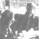

STAFF PHOTO
Helen and Scott Nearing are light-years ahead of most of us when it comes to living a life of voluntary simplicity in harmony with nature. Back in 1932 they began homesteading a run-down farm in Vermont's Green Mountains, and later-when the slopes around them exploded into ski resorts in the early 50's- Helen and Scott moved to a rocky inlet on the Maine coast. . . and started all over again.
That's where you'll find the Nearings today: They're still clearing brush, still building the stone structures they're famous for, and still raising most of their vegetarian diet themselves in productive wholistic gardens . . . just as they've been doing for 50 years.
Naturally, the Nearings have learned a good deal about homesteading over the years . . . and they've agreed to share that knowledge with MOTHER'S readers in a regular question-and-answer column. Send your queries about self-reliant living on the land to Helen and Scott Nearing, THE Mother Earth News(restricted), P.O. Box 70, Henderson-ville. North Carolina 28791. Please don't expect personal replies, though. The most frequently asked questions will be answered here-and here only-so that we can all benefit from what the Nearings have to say.
Have you taken any "survivalist" precautions (such as stocking up on food products, weapons, and essential household supplies) in preparation for a coming economic and/ or social collapse? Why or why not? I'd be interested, too, in hearing your views about what will happen to our society in the next 50 years.
Our "survivalist precautions" were begun 50 years ago, when we made the decision to go back to the land. We did then what the early settlers did: We stocked up on grains and staples . . . dried and canned many vegetables and fruits . . . and stored the tins, jars, and barrels of edibles in a dry cellar. Today we continue to follow these steps toward food self-sufficiency. We own no weapons (except a fly swatter and a mousetrap, which we use with great reluctance and only on extreme provocation). In addition, we've invested in plenty of indoor and outdoor tools and have taken good care of them over the years. These are the only "precautions" we feel are necessary to battle whatever ills the future may hold. As to our predictions for the next 50 years, we believe that nuclear weapons will at some point be used, causing the loss of human and animal life on much of our planet. The immediate future holds-at best-worsening economic problems.
I've enjoyed reading, and I've been inspired by, your books on how you've achieved the "good life" . . . and I've been especially interested in the material on building with stone. However, as a beginning homesteader and novice carpenter/bricklayer, I need a more detailed outline of the process. Could you recommend a good sourcebook or two on stone housebuilding?
We know two excellent books that follow our methods of construction: How to Build a Low-Cost House of Stone by Sharon and Lewis Watson, and Build Your Own Stone House by Karl Schwenke. Both volumes can be found at public libraries or a good bookstore. We also recommend The Owner-Builder's Guide to Stone Masonry by Ken Kern, Steve Magers, and Lou Penfield. [EDITOR'S NOTE: You can order The Owner-Builder's Guide to Stone Masonry- for $11.95 plus 95 cents shipping and handling-from Mother's Bookshelf(restricted), P.O. Box 70, Hender-sonville, North Carolina 28791.]
I'm a long-time admirer of your views and lifestyle, and have read your books on homesteading. One question, however, remains unanswered for me. With such rich and bounteous gardens and only two mouths to feed (I gather that your guests come and go rather sporadically), how are you able to consume all the fresh produce? Finding creative ways to serve and preserve my garden harvest has always been more of a problem for me than growing it, and I'd appreciate any suggestions you might have.
We've reduced our garden space from 10,000 square feet to 2,500 square feet. . . but even this smaller plot provides us with more produce than we can consume. So-after filling our cellar with canned, frozen, boxed, and binned vegetables for winter use-we give away or barter with the surplus.
There are chapters in Living the Good Life and Continuing the Good Life -as well as in Helen's new Simple Food cookbook-which detail our methods of winter storage (write to the Social Science Institute, Dept. TMEN, Harborside, Maine 04642 for ordering information on all our publications).
It's great that some people can achieve a degree of self-sufficiency by rural homesteading . . . but what steps do you suggest that urban (and happily so) folks like me take in order to be more self-reliant?
You seem to like the city and intend to stay in an urban environment. If that's the case, you can try to eat whole, nutritious foods from health food stores and from fruit and vegetable markets . . . or, better yet, grow your own crops, if you've got access to a bit of land where you can do so. We've stayed in cities over a large part of the world, and have generally tried to avoid restaurants and cooked food when doing so. Instead, we always seek out the open-air markets where fresh produce is brought in from the country and offered for sale. (It's also a good idea to try to buy food staples, in bulk, from cooperatives or health food stores.) You can lead a very self-reliant life in an urban environment . . . though in our opinion country life is by far more enjoyable and healthful.
I was very disappointed by your advice, in issue 72, that homesteaders not bother to save vegetable seed. For the past two years our small rural county has held a community seed exchange at a centrally located meeting place. Each gardener specializes in a different set of vegetables, and then trades with other growers for the seeds he or she lacks. (I do well with spinach, onions, parsnips, broccoli, celery, and kale . . . and swap my treasured seeds for asparagus, peas, beans, tomatoes, and lettuce.) In this way, very little land in any given garden is "wasted" to grow seeds, yet through our combined efforts we're able to produce all the seeds needed for the following year's planting. With the "dog-eat-dog" attitude so prevalent in our society, I think it's a shame to pass up such an opportunity for creating a sense of community and sharing among neighbors . . . while-at the same time-taking a significant step toward food self-reliance.
Hurrah for you and your community for your seed-saving efforts! Any form of collective activity that leads to local cooperation is commendable.
However, we still feel that the limited space in our small two-person garden is best utilized by devoting it entirely to primary crops, so we save very few seeds for the coming year.
In MOTHER NOS. 56 and 61 you shared your views about the negative aspects of owning pets and-as vegetarians-you're of course opposed to raising animals for meat. I was wondering, though, whether you are also against keeping bees as "livestock" . . . and, if not, why did you choose not to produce honey on your land?
Although bees are not actually considered livestock , the consumer-by eating honey-exploits the insects' productive labor . . . and we object to this practice. Furthermore, honey is one of the concentrated sweets that we are trying to eliminate from our diet. (In fact, one of the reasons we left Vermont was that we were producing and consuming large quantities of maple syrup.) On a practical level, too, beekeeping wouldn't suit us. There are few flowers in our region for the insects to harvest from, and even fewer apiarists in the area. And because we like to come and go as we please, we feel that the on-the-spot attention often demanded of beekeepers would hinder our mobility.
|
 |
|
|